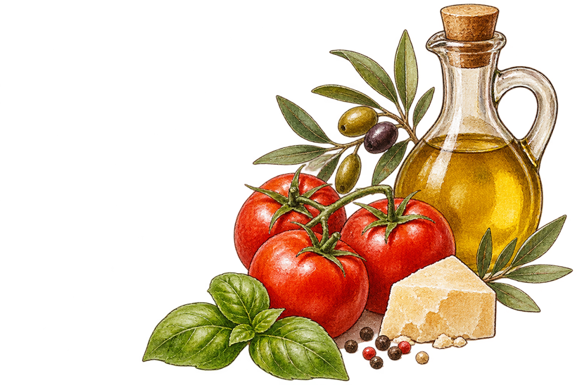

Как мы работаем с данными
- Справочные значения обозначаются как ориентировочные.
- Данные конкретного бренда нужно сверять с его упаковкой.
- Информация о безопасности не заменяет официальные рекомендации и требования.
Продукты без секретов и цифры без лишних вопросов.

Ищи продукты по названию, категории или немецкому переводу. Открой карточку, чтобы увидеть подробности.
Три пункта, которые помогут понять упаковку и сравнить похожие продукты.
FoodLab — независимый образовательный проект о пищевых продуктах. Мы объясняем термины и помогаем ориентироваться в маркировке.
Следующие обновления расширят базу продуктов, добавят подробный справочник пищевых добавок, объяснения аллергенов и больше материалов о хранении.
Небольшая отдельная чайная вселенная: 100 сортов, ароматов и уютных идей. Не часть энциклопедии FoodLab — просто особенный уголок.
Ничего не найдено. Попробуй другое название.